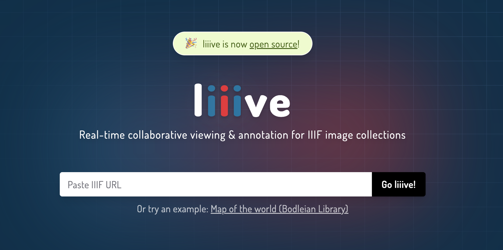

Lesson 1: IIIF
This lesson introduces core concepts associated with the international image interoperability framework (IIIF)
What’s IIIF?
(pronounced “triple-eye-eff”)
The International Image Interoperability Framework, or IIIF for short, is an image sharing protocol commonly used by libraries and museums. Even a basic understanding of it will unlock a vast, rich world of IIIF-enabled materials. Let’s get into it.

Like any other web standard, IIIF describes a set of rules. In this case, the rules are about how to structure and share big images and metadata about those images. IIIF is particularly useful for sharing large, high-resolution images over the web—that’s really the problem statement for IIIF implementation. Practitioners, implementers, and users across the world collaborate to sustain the IIIF protocol, building web applications and extensions around it. In that sense, IIIF also describes a community.
This workshop focuses specifically on maps and geospatial applications for IIIF. Millions of digitized maps (as well as other resources, like paintings, photographs, and more) are publicly available as IIIF images. Most of the time, digital repositories will use the logo to indicate that their collections are IIIF-compliant, so keep an eye out for that!
What’s the problem?
Digital images can be huge. They can load inefficiently, sometimes not at all.

Even physically small photos can have a large file size when they are stored in a digital repository system and served to a user. The massive map shown here, Kaart van het Brugse Vrije by Pieter II Claeissens, takes up many gigabytes of storage space. Digitizing it required taking dozens of separate photographs and stitching them together in a software like Photoshop.
Delivering a multi-gigabyte image through a web application is a really big payload. Unfortunately, that’s exactly what most libraries and museums are often dealing with: very big, high-resolution digital versions of their physical materials. And those libraries and museums want those digital versions to be accessible to their patrons.
IIIF responds to the problem of inaccessibility of very large, high-resolution images, by providing a set of rules and tools for exchanging these big images over the web.
How does IIIF work?
IIIF makes it easier to store images on a server and deliver those images to a user.
Implementing IIIF—for example, in a library or museum’s digital repository—divides images into smaller regions of tile pyramids. These pyramids make the image available at different resolutions, preserving the fidelity of deep zoom without having to deal with the payload of a massive file size all at once.
The interactive below provides a great visualization for how tile pyramids work. An image is shown on the left, while its underlying tile pyramid is shown on the right. As you zoom into the image, the relevant section of the tile pyramid is highlighted in gray.
Try zooming into the image and panning around!
IIIF tile pyramids follow the same computational logic that digital mapping tools like Google used for many years to serve global satellite imagery or base maps. It takes forever to load a single image of the whole world, so most web maps chunk those images into smaller 'XYZ tiles.'
The IIIF Manifest
The prime unit in IIIF is something called a Manifest. You can think of this as a container for all the components of a IIIF resource, just like a ship manifest that lists passengers or cargo.
In our case, the cargo includes the pixels of the digital resource, its metadata, and any optional parameters for how the image should be displayed.
IIIF allows images to be delivered according to a number of parameters, including size, zoomed portion, rotated view, color, and more. All of these settings are designated by changing portions of the URL for an Image API resource.
Take, for instance, this bird’s eye view map from the Leventhal Center’s digital collections. All of the maps in the Leventhal Center’s collections are IIIF compliant.
Navigate to the object record in the Leventhal Center’s collections by clicking the link below:
https://collections.leventhalmap.org/search/commonwealth:9g54xk528
At this page, you’ll find the map image embedded in a viewer where you can deeply zoom and pan around the image.
Scroll down a bit, and you’ll see a button that says “IIIF Manifest.” Again, just look for the logo. When you click that button, a new tab opens with a big jumble of JSON (JavaScript Object Notation) data.
That big JSON jumble is our IIIF Manifest for the bird’s eye view map! Try scrolling around the embedded Manifest below, or even opening the Manifest in a new tab.
What kinds of metadata values do you see?

{
"@context":"http://iiif.io/api/presentation/2/context.json",
"@id":"https://ark.digitalcommonwealth.org/ark:/50959/9g54xk528/manifest",
"@type":"sc:Manifest",
"label":"Bird's eye view of Boston",
"thumbnail":{
"@id":"https://ark.digitalcommonwealth.org/ark:/50959/9g54xk528/thumbnail",
"service":{
"@context":"http://iiif.io/api/image/2/context.json",
"@id":"https://iiif.digitalcommonwealth.org/iiif/2/commonwealth:9g54xk53j",
"profile":"http://iiif.io/api/image/2/level2.json"
}
},
"viewingHint":"individuals",
"metadata":[
{
"label":"Title",
"value":"Bird's eye view of Boston"
},
{
"label":"Date",
"value":"1850"
},
{
"label":"Creator",
"value":[
"Creator",
[
"Bachmann, John, fl. 1849-1885"
]
]
},
{
"label":"Publisher",
"value":"New York : Williams \u0026 Stevens"
},
{
"label":"Type of Resource",
"value":[
"Cartographic",
"Still image"
]
},
{
"label":"Format",
"value":"Maps"
},
{
"label":"Language",
"value":"English"
},
{
"label":"Subjects",
"value":"Boston (Mass.)--Aerial views"
},
{
"label":"Location",
"value":"Boston Public Library"
},
{
"label":"Collection (local)",
"value":"Norman B. Leventhal Map \u0026 Education Center Collection"
},
{
"label":"Identifier",
"value":[
"https://ark.digitalcommonwealth.org/ark:/50959/9g54xk528",
"06_01_008059",
"G3764.B6A3 1850 .B33",
"39999065650085"
]
},
{
"label":"Terms of Use",
"value":[
"No known copyright restrictions.",
"No known restrictions on use."
]
}
],
"attribution":"No known copyright restrictions. No known restrictions on use.",
"seeAlso":"https://ark.digitalcommonwealth.org/ark:/50959/9g54xk528",
"sequences":[
{
"@type":"sc:Sequence",
"canvases":[
{
"@id":"https://ark.digitalcommonwealth.org/ark:/50959/9g54xk528/canvas/9g54xk53j",
"@type":"sc:Canvas",
"label":"image 1",
"width":8983,
"height":6709,
"images":[
{
"@id":"https://ark.digitalcommonwealth.org/ark:/50959/9g54xk528/annotation/9g54xk53j",
"@type":"oa:Annotation",
"motivation":"sc:painting",
"resource":{
"@id":"https://ark.digitalcommonwealth.org/ark:/50959/9g54xk53j/large_image",
"@type":"dctypes:Image",
"format":"image/jpeg",
"width":8983,
"height":6709,
"service":{
"@context":"http://iiif.io/api/image/2/context.json",
"@id":"https://iiif.digitalcommonwealth.org/iiif/2/commonwealth:9g54xk53j",
"profile":"http://iiif.io/api/image/2/level2.json"
}
},
"on":"https://ark.digitalcommonwealth.org/ark:/50959/9g54xk528/canvas/9g54xk53j"
}
]
}
]
}
]
}
In the Leventhal Center’s digital collections, you can access the IIIF Manifest of any object by simply suffixing the normal URL with /manifest, like so:
https://collections.leventhalmap.org/search/commonwealth:9g54xk528/manifest
That’s not a universal convention, but it does make working with the Leventhal Center’s IIIF materials quite easy.
Viewers
IIIF viewers are some of the most common IIIF applications. Universal Viewer is a popular example. Check out the bird’s eye view of Boston and the Claeissens map below, both embedded in Universal Viewer frames:
IIIF Tools
At the Leventhal Center, we built a tool for manipulating and cropping IIIF images. Try it out at this link: https://iiif-tools.leventhal.center
As a challenge, try pasting the bird’s eye view map—or any IIIF map—into IIIF Tools. Load the image, then copy the “IIIF Endpoint.”
That “IIIF Endpoint” URL loads the actual image data. It’s also known as the info.json file.
If you paste it into the input bar below, you should be able to see your chosen image displayed in the tile pyramid viewer!
Annotations
Annotations are some of the most powerful use cases for IIIF images. They are exactly what they sound like: annotations on the canvas of a IIIF image. At their essence, annotations are a method for associating descriptive or interpretive information about the image with specific pixel coordinates in the image.
For researchers, these could include:
- Transcribing documents
- Commenting or analysis of image content
- Highlighting specific areas of the item
These annotation markups can be stored in a IIIF Manifest.
There are a few different web apps and libraries for creating annotations, including Annotorious and Mirador.
Liiive
My favorite annotation tool is liiive.now, a real-time, collaborative annotation platform for IIIF images:

Let’s try it out with an urban atlas from the Leventhal Center’s collections.
Given this urban atlas…
https://www.digitalcommonwealth.org/search/commonwealth:bc389528s
… we can access the IIIF manifest at…
https://www.digitalcommonwealth.org/search/commonwealth:bc389528s/manifest
… and paste that Manifest into our IIIF Tools to select a particular map from the atlas.
I picked this image:

Click this link to join the liiive.now room and start annotating: https://liiive.now/s1ht84vnbir7
This liiive.now room is temporary, so the URL above won't work after the day of this presentation. However, you can always make a new room for free and try it out again.